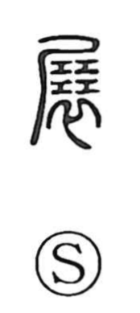

展

Uncategorized
Kun: noberu, hirogeru | On: ten
to expand ・ to unfold ・ to display ・ to investigate
Explanation
In the oracle-bone and bronze forms, 展 is a compound: 尸 shows a body laid out, a second element depicts four stacked ritual implements used as apotropaic blocks, and 衣 marks the clothing at the neck. The graph pictures those protective implements being packed into the collar of a corpse to seal it against intrusive spirits. From rites of laying out and examining the dead (as in 展屍) and displaying sacrificial victims to assess their condition (展犠), the sense broadened to spreading out, opening, and by extension to examining or investigating.